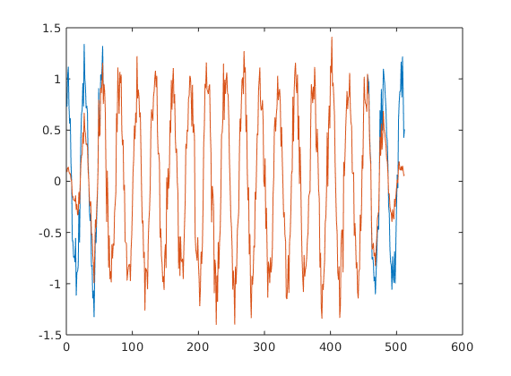

MATLAB Exercise 2
Illustration of analysis - synthesis
Based On 2007 Moed A Q. 3
1. FBS Analysis/Synthesis
Analysis Cell code
%% STFT of a single-frequency signal % Analysis filter half-size Lh = 1024; % the index _n_ for creating the analysis window nh=(-Lh:Lh-1)'; % DFT length M=64; % ANALYSIS FILTER % if we wanted to calculate the sinc from the sine function: %%% w_analysis = sin(pi*nh/M)./(pi*nh); %%% w_analysis(1025)=1/M; % using matlab's signal processing toolbox sinc function: w_analysis = sinc(nh/M)/M; % CREATE INPUT SIGNAL k1 = 12; % an arbitrary frequency for the input signal ns = (0:(1024*32-1))'; % the index _n_ for the signal s = cos(2*pi*k1*ns/M); % the signal % STFT s_zeropad = [zeros(Lh,1); s; zeros(Lh-1,1)]; % the analysis filter "eats up" 2*Lh-1 samples from the output S = my_stft(s_zeropad,w_analysis,1,M); t = abs(S); figure(); h=pcolor(t(1:64,:)); set(h,'EdgeColor','None')
Cell output
As expected, the periodogram does not change over time (hence the horizontal symmetry).
Since the chosen band is , we see periodogram peaks at bands and .

Synthesis cell code
%% FBS syntesis (requires previous cell) % calcualte the baseband factor [NFFT, n_slices] = size(S); n = (0:n_slices-1); k = (0:NFFT-1)'; % since _k_ is column and _n_ is row, % multiplying them will get their cartesian-product matrix: baseband = (2*pi/NFFT)*k*n; % We are not running the istft function. % Instead, preform the inverse baseband shift % and sum the STFT coefficients: Sbb = S .* exp(1i*baseband); % shift back from baseband r = sum(Sbb)'; % recounstructed signal % RESULTS % check the signal is real sprintf('imaginary part: %.2f dB', ... 10*log10( ... norm(imag(r)) / norm(real(r)) ... )... ) sprintf('Reconstruction error: %.2f dB',10*log10(norm(r-s)/norm(s))) % plot the reconstructed signal on the original figure(); plot(real(r(1:50)),'b-'); hold on; plot(s(1:50),'r-')
Cell Output - Sinc analysis filter (satisifies perfect reconstruction condition)
The norm of the difference between the signals is well within the expected numeric noise.
The plot illustrates the two graphs perfectly overlap (up to the resolution of this graphic)
ans =
'imaginary part: -161.38 dB'
ans =
'Reconstruction error: -153.15 dB'

Cell Output - Rectangular analysis filter
Here we use a filter that is not suited for FBS reconstruction, since it does not have zero coefficients at n=M, 2M, 3M,... and therefore fails the Portonoff perfect reconstruction condition.
The result is poor reconstruction. I have used three signals to test this system and illustrate its reconstruction fidelity:
- Perfect sinusoid
- Sinusoid + noise
- white noise
Here are the three graphs for these signals:

'Reconstruction error: -12.43 dB'
Observe, however, that the reconstructed signal is actually the same as the original, up to a gain. This will hold for any signal of period M. The reason for this is that since the synthesis filter is just a delta function, the effect of the M'th coefficient of the filter (which should be zero) is to create a shifted image of the original signal, with shift M.
Rectangular window, noisy sine wave

'Reconstruction error: -5.70 dB'
We observe a better SNR here than the pure sine wave. The reason is that the reconstructed signal is pretty much the same signal, as the filter tends to average out the noise. The original signal however has a higher variance, leading the SNR metric to improve.
Rectangular window, Gaussian white noise

'Reconstruction error: -0.11 dB'
The nonperiodic signal's reconstruction is poor.
Question 3 Part 2 - WOLA
When Portonoff condition holds with boxcar analysis and synthesis filters, since for every , there are exactly 2 points of and which add to the sum.
This conclusion can be extended for any R which divides M exactly. However,
- The first and last M samples will not be accurately reconstructed (due to "missing" overlaps in the OLA)
- The synthesis filter should be scaled by to maintain a reconstruction coefficient of 1.
OLA with M=64, R=64, h=rectwin(64), f=rectwin(64)
The signal is a noisy sinus which is not M-periodic (the period length is not a divisor of M)
'Reconstruction error: -316.22 dB'
OLA with M=64, R=32, h=rectwin(64), f=0.5*rectwin(64)

'Reconstruction error: -316.34 dB'
OLA with M=64, R=8, h=rectwin(64), f=0.125*rectwin(64)

cell code
%% WOLA analysis mr_ratio = 8; M = 64; R = floor(M/mr_ratio); Lh = M; Lf = M; w_analysis = rectwin(Lh); w_synthesis = w_analysis/mr_ratio; % CREATE INPUT SIGNAL input_signal_type = 'noisy_sinus'; % 'noise'; % 'sinusoidal';; s = create_input_signal(input_signal_type,512,M*5); % Transform S = my_stft(s,w_analysis,R,M); r = my_istft(S,w_synthesis,R); tt = M: length(r)-M; sprintf('Reconstruction error: %.2f dB',10*log10(var(r(tt)-s(tt))/var(s(tt)))) figure(); plot(real(s)) hold on plot(real(r))